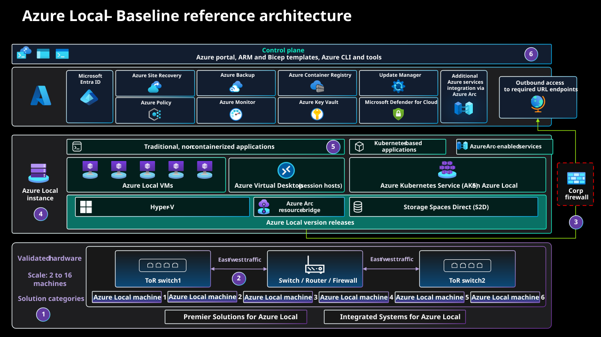

1. Azure Local and LocalBox overview

1. Understand Azure Local before building the lab
Azure Local brings Azure-managed infrastructure to a customer location. In the connected, hyperconverged deployment covered here, physical machines contribute Hyper-V compute and Storage Spaces Direct storage. Windows and Linux virtual machines, and Kubernetes workloads running on AKS on Azure Local, consume that infrastructure. Azure remains the management plane; this is not a copy of every Azure service running inside a rack.
This guide follows an educational Jumpstart LocalBox deployment: Azure Local machines are themselves nested virtual machines inside one Azure VM. Deployment evidence begins on 16 October 2026; the update Installed state, both nodes Up, and Ubuntu ownership on AzLHOST1 were recorded on 17 October 2026. These are historical observations, not live health assertions. Read the architecture and evidence boundaries, choose the correct deployment path in chapter 2, then work through the prerequisites and stop conditions in chapter 3.
What is Jumpstart LocalBox, and how does it relate to Azure Local?
Azure Local is the infrastructure product. Azure Arc Jumpstart is Microsoft's collection of hands-on deployment scenarios and automation. Jumpstart LocalBox, shortened to LocalBox after its first mention, is the sandbox in that collection for exploring Azure Local and Azure Arc without physical Azure Local servers. LocalBox is not another Azure Local edition, an Azure region, or a production landing zone.
LocalBox runs actual Azure Local software inside nested virtual machines. The nested topology reproduces useful deployment and management workflows, not independent physical failure domains or production hardware performance. Its Azure resources incur compute, storage, networking, and applicable auxiliary-service charges; “sandbox” does not mean free.
| Layer | Recorded component | Responsibility and boundary |
|---|---|---|
| Outer Azure host | LocalBox-Client | An Azure VM running Windows and Hyper-V. Bastion opens this desktop. It hosts the nested environment; it is not one of the Azure Local cluster nodes. |
| Azure Local infrastructure | AzLHOST1 and AzLHOST2 | Two nested Azure Local nodes form the instance, providing Hyper-V compute and shared cluster storage. Both depend on the same outer host. |
| Management dependencies | AzLMGMT | A separate nested Hyper-V host contains the domain controller/DNS and lab router. It is not a third cluster node, an AKS worker, or the resource bridge. |
| Azure management integration | Azure Arc, Azure Arc resource bridge, and custom location | Project resources into Azure and direct supported operations to the local fabric. The bridge's management Kubernetes cluster is separate from the application AKS cluster. |
| Workloads | ubuntu-motion and localbox-aks | The Ubuntu VM and the AKS cluster run on the nested Azure Local infrastructure. The AKS cluster's control-plane and worker VMs are not the two infrastructure nodes. |
Where landing zones fit: the Microsoft Cloud Adoption Framework (CAF) describes enterprise adoption and operating practices; Azure landing zones (ALZ) provide the organization, governance, security, and shared-service design model used here. LocalBox supplies the lab, not an ALZ implementation. The proposed Local management-group placement remains distinct from the actual one-subscription lab.

Follow a management request through the layers
- Start in Azure. An administrator authenticates with Microsoft Entra ID and submits an operation through the portal, Azure CLI, PowerShell, or a Bicep/ARM deployment. Azure Resource Manager applies the resource model and Azure role-based access control.
- Locate the local target. Azure Arc projects the infrastructure into Azure. A custom location identifies the Azure Local deployment target; it is not a public Azure region or a geographical relocation of the hardware.
- Translate the operation locally. The Azure Arc resource bridge is an appliance VM hosting a Kubernetes management cluster. Its Azure Local VM operator/controller extension turns supported Azure VM lifecycle requests into local fabric operations.
- Run the workload. Hyper-V executes the guest on a cluster node. Storage Spaces Direct pools eligible node-local drives and provides resilient storage; Cluster Shared Volumes expose shared storage to the cluster. Virtual networking connects workload interfaces to the intended networks.
- Observe two different responsibilities. Azure reports resource provisioning and management status; operating-system and application checks establish whether the guest is actually healthy. Neither a green ARM deployment nor an Arc connection alone proves application availability.
| Component | Purpose | Do not confuse it with |
|---|---|---|
| Azure Arc-enabled servers | Onboard and manage the Azure Local machines. | Azure Local VM resources created for tenant workloads. |
| Resource bridge + custom location | Connect cloud resource operations to the local platform. | The application's Kubernetes cluster. |
| AD DS, DNS, and time | Provide the identity and name-resolution dependencies used by this AD-based lab. | Microsoft Entra ID authentication to Azure. |
| Cloud witness | Provides an additional quorum vote for the two-node instance. | A third compute node, a replica of VM disks, or a backup. |
| AKS control plane and workers | Manage Kubernetes objects and execute application pods. | The resource bridge's separate infrastructure-management Kubernetes cluster. |
Production identity, DNS, time, and recovery dependencies must remain available when the Azure Local instance is unavailable. This lab places its domain controller and router in a nested management environment for convenience, not as a production dependency design. Current Azure Local also documents a local-identity-with-Key-Vault path; it is not the AD-based LocalBox path taught here.
1.1 Establish the CAF / Azure landing zones boundary
Proposed enterprise target, not deployed lab: the current Azure landing zones (ALZ) architecture includes Platform management-group children Security, Management, Identity, and Connectivity, each with its corresponding shared-service subscription. Under Workload Landing Zones, the Local management group contains an Azure Local Clusters subscription and an Applications subscription. Corp and Online remain other workload categories; Local is not an Azure region or a network hub. This placement allows Azure Local-specific policy without imposing unsuitable cloud-VM assumptions on hybrid infrastructure.
The actual exercise uses one disposable subscription and resource group; no enterprise hierarchy, subscription vending, central Sentinel workspace, ExpressRoute, or production landing zone is established by these chapters. Treat the two subscriptions in the target as ownership/governance boundaries, not a promise that every provider supports arbitrary cross-subscription references. Validate each resource type, custom location, region, provider registration, and supported workload-placement relationship before implementing that separation. Do not move existing bridge-dependent resources merely to match a diagram.
For the target, platform engineers own cluster machines, infrastructure extensions, bridge, custom location, and infrastructure dependencies. Application teams own their workload lifecycle and data, with delegated access to approved shared placement/network/storage resources. Arc-enabled application resources belong with the workload they support; Arc-projected identity infrastructure belongs with the identity service. This follows Microsoft's hybrid resource-placement guidance, which is marked deprecated and scheduled for removal on 30 October 2026; use the maintained ALZ and Azure Local references for future decisions.
1.2 Separate three planes before troubleshooting
| Plane | Request and permission boundary | Required evidence |
|---|---|---|
| Azure control plane | Administrator → Microsoft Entra ID authentication → ARM over HTTPS 443; Azure RBAC and policy authorize resource operations. | Correct masked tenant/subscription context, scoped role, operation ID, provisioning result. |
| Local management plane | Bridge/controller → cluster APIs; authorized AD cluster operators use approved private management paths. Guest SSH and Kubernetes authorization remain additional boundaries. | Bridge and extension health, current cluster state, successful authorized guest/API access. |
| Workload data plane | Clients → application IP/port; Hyper-V workload switching and CSV/S2D storage carry application traffic and persistence. | Actual DNS/routing, application response, dependency health, and recoverable data. |
A management group distributes inherited controls; it does not proxy packets. Resource-group membership grants neither routing nor application access. Arc is not a VPN, and its private relay features do not connect arbitrary subnets. The loopback forwards later in the guide are explicit, authenticated client sessions, not an enterprise ingress design. Azure Local's firewall requirements explicitly exclude Arc Private Link Scopes for its infrastructure: required Arc endpoints resolve publicly, outbound allowlists are necessary, and HTTPS inspection is unsupported. Do not infer infrastructure Private Link support from another Arc product's capabilities.
1.3 Accept the design before accepting deployment evidence
- Inputs: classify data, identify a service owner, choose connected AD-based deployment, and record intended site, support release, access model, budget, and recovery objectives privately. Reader access is sufficient for inventory; later write operations need separately approved permissions.
- Design-area mapping: map tenant/billing to the disposable scope; identity to Microsoft Entra ID versus AD versus guest/Kubernetes permissions; resource organization to Local placement; connectivity to explicit flow paths; security/governance to tested controls; management to monitoring and restore; automation to pinned, reviewed artifacts. See the eight ALZ design areas.
- Success gate: produce an approved boundary/owner matrix and dependency inventory, separating observed lab facts, proposed physical controls, and unverified assumptions. A diagram or green portal badge alone fails this gate.
- Failure and recovery: if ARM works but guest access fails, diagnose routing, relay, and guest authorization independently. If Arc is disconnected, avoid duplicate creation; preserve operation evidence and repair the documented connectivity/agent dependency. Running workloads may continue, but cloud-mediated management and monitoring are degraded.
- Rollback and operations: before any write, retain the previous configuration and approved reversal path. The platform owner handles infrastructure incidents; the workload owner proves application recovery; security reviews privileged changes and redacted audit evidence. Audit-first policies require resource/API compatibility testing before enforcement.
Inspect the resource model without changing anything
After signing in to the intended subscription, list resource types rather than publishing a full resource-ID dump. Expect separate machine, bridge, custom-location, and workload resources as the relevant stages complete. An early infrastructure-only deployment will not contain all of them.
$rg = Read-Host 'Enter your lab resource-group name'
az resource list --resource-group $rg `
--query "[].{Name:name,Type:type,Region:location}" --output tableNested is not production high availability. Both simulated nodes share one outer VM and its storage, network, and failure domain. A nested node restart can demonstrate cluster behavior, but cannot establish physical fault isolation, production throughput, recovery objectives, or hardware certification.
Terminology and acronyms used throughout this guide
Use the full name when introducing a component, then the defined short form. Exact resource names, CLI extensions, API namespaces, status values, and menu labels retain their original spelling. For example, Microsoft.AzureStackHCI and stack-hci-vm are current technical identifiers in these examples, not instructions to rename Azure Local back to Azure Stack HCI. Historical screenshots and the attributed Microsoft reference diagram are not relabeled.
| Term | Meaning in this guide |
|---|---|
| Azure Local | The infrastructure product; formerly named Azure Stack HCI. The connected hyperconverged deployment is the scope covered here. |
| Jumpstart LocalBox / LocalBox | The Azure Arc Jumpstart learning sandbox. Do not use “Azure LocalBox” as a product name. |
| Azure Arc | Azure management capabilities for infrastructure and supported workloads outside ordinary Azure-hosted resource deployments; not general-purpose network connectivity. |
| Azure Local VM | Short form for an Azure Local virtual machine enabled by Azure Arc, such as the managed Ubuntu workload. It is not the outer Azure VM or an Arc-enabled server registration alone. |
| AKS on Azure Local | Azure Kubernetes Service (AKS) enabled by Azure Arc running on Azure Local. This is the consistent short name for the Kubernetes deployment in chapter 4, not Azure-hosted AKS. |
| Azure Arc resource bridge / resource bridge | The management appliance connecting supported Azure resource operations to the local platform. Its Kubernetes cluster is not the workload AKS cluster. |
| Azure landing zones (ALZ) | The enterprise design model. A landing zone is not a network tunnel, a Kubernetes cluster, or a LocalBox resource. |
| Node / host / guest | An Azure Local node hosts workload VMs; a guest is a workload operating system. “Outer host” specifically means LocalBox-Client. AKS nodes are separate workload VMs, not Azure Local infrastructure nodes. |
| Live migration / Live Migration | A planned transfer of a running VM between healthy eligible nodes. Use lower case in narrative and preserve Live Migration for the exact Failover Cluster Manager menu label. |
| Recorded / proposed / unverified | Recorded means observed at the stated historical time; proposed means a target or reader-run example; unverified means acceptance evidence is absent. None means current live health. |
| Acronym | Expansion and purpose |
|---|---|
| AD DS | Active Directory Domain Services: domain identity used by this lab, separate from Microsoft Entra ID. |
| ARM / RBAC / PIM | Azure Resource Manager / role-based access control / Microsoft Entra Privileged Identity Management: resource operations, authorization, and eligible privileged access. |
| ATC / S2D / CSV | Network ATC (automated network configuration) / Storage Spaces Direct / Cluster Shared Volume: host-network configuration, pooled resilient storage, and shared cluster volumes. |
| CAF / ALZ / MG | Microsoft Cloud Adoption Framework / Azure landing zones / management group: adoption guidance, enterprise design, and inherited governance scope. |
| FCM / HA | Failover Cluster Manager / high availability: a management console and an availability property, not a backup strategy. |
| DNS / NTP / VLAN / NAT | Domain Name System / Network Time Protocol / virtual local area network / network address translation: name resolution, time synchronization, network segmentation, and address translation. |
| RDP / SSH / SMB | Remote Desktop Protocol / Secure Shell / Server Message Block: distinct administrative, guest-access, and storage transports. |
| RPO / RTO | Recovery point objective / recovery time objective: approved limits for data loss and recovery duration. The lab has not established production values. |
| IaC / DCR / SOC / OEM | Infrastructure as code / data collection rule / security operations center / original equipment manufacturer: automation, telemetry collection, security operations, and hardware/support ownership. |
| VHDX / Generation 2 / GiB / vCPU | Virtual hard disk format / Hyper-V VM generation / gibibyte / virtual CPU. Preserve identifiers and Kubernetes quantity syntax in commands; use spaces between quantities and units in narrative. |